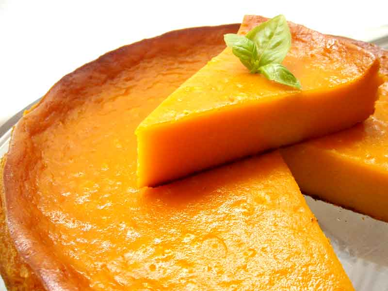

Torta de Auyama

Descripcion
La torta de auyama tipo pudín es una receta muy sencilla de hacer y con ingredientes que por lo general están al alcance de todos.
Tiene una consistencia muy suave tipo pudín y es muy diferente y deliciosa.
Aunque está hecha con calabaza no se siente su sabor para nada, así que si te la comes y no te dicen qué lleva, no te darías cuenta de su ingrediente principal.
Ingredientes
- 500 gr de auyama (calabaza)
- 1 taza de harina de trigo
- 1 taza de leche condensada
- 3 huevos
- 100 gr de mantequilla derretida
- 1 cucharadita de vainilla
- 1 pizca de nuez moscada
- 1 pizca de canela
- 1 pizca de sal
- Harina y mantequilla para el molde (yo usé un molde circular de 18 cm de diámetro)
Preparacion
- Limpiamos y quitamos las semillas a la auyama, cortamos en cuadritos y tenemos 2 opciones: hornearla a 200° C durante 20 minutos hasta que esté blandita o cocerla en agua. Si te decides por la última procura escurrirla bien para usarla en el siguiente paso.
- Trituramos la auyama hasta obtener un puré. Reservamos.
- Mezclamos la mantequilla con la leche condensada usando un batidor de globo, agregamos el puré de auyama, los huevos ligeramente batidos, la harina, la sal y las especias uno por uno. Batimos hasta obtener una mezcla homogénea. En este punto es aconsejable probarla de dulce, ya que particularmente a mí me gusta el dulzor que le aporta la leche condensada y no veo necesario agregar azúcar adicional, pero puede que alguno de ustedes sea más dulce y le apetezca agregarle un poco más esto es al gusto.
- Precalentemos nuestro horno a 230° C durante 10 minutos.
- Engrasamos y enharinamos nuestro molde preferiblemente pequeño y un poco alto (18 cm de diámetro aproximadamente), vertemos nuestra masa y la horneamos a 200° C durante 45 a 50 minutos aproximadamente o hasta que esté bien doradita pero no demasiado oscura (la prueba del palillo aquí pocas veces funciona ya que por su consistencia algunas veces sale mojado aunque esté ya cocida).
- Servir caliente o dejar enfriar.